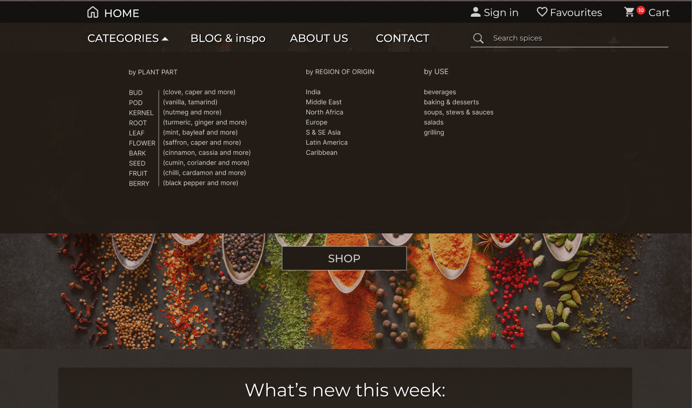
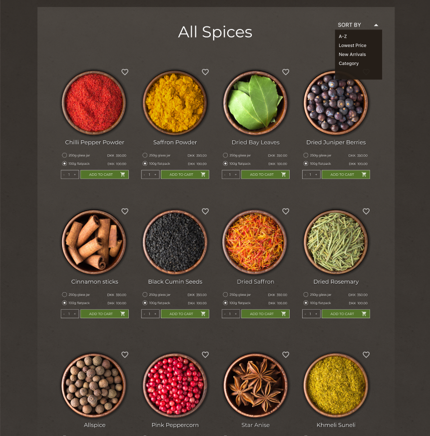

A detailed UX/UI design for the students of
Hack-Your-Future/Copenhagen
coding school that is easy to read and navigate in terms of flows and does not require very advanced knowledge
of Figma.
The design is for a simple online store. I have used very common patterns to maintain usability standars while
keeping things uncomplicated. The flows work in loops, there are error prevention mechanisms added.
CHALLENGES
Our students are budding developers who are not familiar with Figma yet, so the prototype must be easy to
follow. On top of it, they will need to figure out how to adapt the prototype for mobile version to prepare
them for future scenarios when they cannot be guided by a designer or a senior colleague. That is why the
mobile design is not provided, but I was guiding the students to promote good practices of Responsive Web
Design.
METHODOLOGY HIGHLIGHTS / TOOLS + TECHNOLOGIES
The Double Diamond 💎💎
and User Center Design, stakeholder's interview, cross-functional team and agile environment,
iteration, testing, wireframes, developer-friendly prototype, visual design.
Figma, a pencil and paper, human helpers (stakeholders and users), empathy,
HTML, CSS, JavaScrpit, React.js, GitHub, Jira, Confluence.
DESIGN PROCESS HIGHLIGHTS
DOUBLE DIAMOND: discovery and definition phase
There is not much discovery involved as the project is relatively simple due to small budget and tight
deadline. The designer's decision was to use the standard by-the-book solutions that work and are aligned with
Jacob Nielsen's 10 General Principles for Interaction Design.
UX Research was quite easy and 1:1 sessions with a group of 19 people helped us to understand how we might
organise spices by categories. Patterns were very clear so that creating the Sitemap and overall
Information Architecture was fast and satistying. The weird part is that my own ideas how to categorise
spices are apparently niche. My braing imagines things sweet, spicy, salty, savory etc. It has to do with
taste. However, the majority prefers to divide spices by use. What most users needed was what kind of dish we
would use a thing for: a beverage? a salad? 10 out of 19 people considered themselves cooking pros and they
mentioned that a plant part category would be helpful so that's what we did.

Open navigation
DOUBLE DIAMOND: development and delivery
Information architecture design
The sitemap is kept as uncomplicated as possible. It is kept flat with the obvious exception of spices
categories. The navigation is a common usecase for stores with anything account related is kept on top.
There was not time for rough sketches so I had to draw high-res prototype so finding the right aesthetics
and feel was the next thing to do.
Visual Identity
Our group of 19 were asked to search the internet a little and find images that they would feel like the
right choice for the spice store: max 4 images of spices wit and without packaging plus an image of what
they think a physical store would and should look like. While they were presenting their preferences, they
were supposed to try to tell the group why they find this particular image / style appealing.
Over 2/3 of the group went for non-minimalist approach in terms of packaging: serif old-fashioned looking
font types, ornaments, glass instead of plastis so the stylescape was going into a very traditional feel.
The key task was to find a set of relevant Adobe Stock photos that would follow the mood chosen by our human
helpers. When I saw the image which I used for the landing page, I knew that it was the one. Most of my
group ended up in awe as the image is exceptional. It is warm, cosy, visually striking in therms of colours
but also havein the traditional touch (the spoons!). Soon after I was able to find product pictures that
skipped the packaging, but instead showed the product itself. There was no package designed for the product
at all, but we imagined that it would be either a 'Weck' glass jar or a dark brown-coloured paperbag.
Here is what we ended up with for product list: all beutifully consistent.

Spices list (photos licensed from Adobe Stock)
The typography should not be overwhelming since the images are so visually rich so we went for a sans serif
'Montserrat' typeface for the body copy. For the logo though, the choice is Fredericka the Great that
compliments the traditional feel of the landing page. Voila!
Credits:
Main photo (slightly adjusted): Herbs and spices for cooking on dark background by
Alexander Raths
Photos of spices (altered, original full panel source below): large set of Indian spices and herbs
isolated on black background. Colorful seasoning for spicing food by
dmitr1ch
Lastly, dark mode was chosen to in order to let the images shine and not to introduce unnecessary contrast
between the image and a potentially light background. Quiet shades of brown seem to have been a reasonable
solution.
Guidelines made easy
Back to UX: Flows!
Due to tight deadline, I skipped building interactive prototype and instead went for very clean sections
showing how the user flows work, making sure there there is always somewhere to go once a task has been
accomplished and that the logic is readable and easy to understand to our junior devs who had never used
Figma. Simple colour markers and lined between pages did the work.
Flows
Flow example 1/3
Flow example 2/3
Flow example 3/3
Here's our Figma in full
Figma workspace
Post delivery testing: results
The site was built to be responsive for all kinds of devices after a few iterations.
Usability tests were passed by all the participants. They were supposed to complete
a few simple tasks on their laptops and mobile devices and no-one got lost or confused, which is a win.
Aesthetics (colours, contrasts, typography) semed appealing to most of the participants.